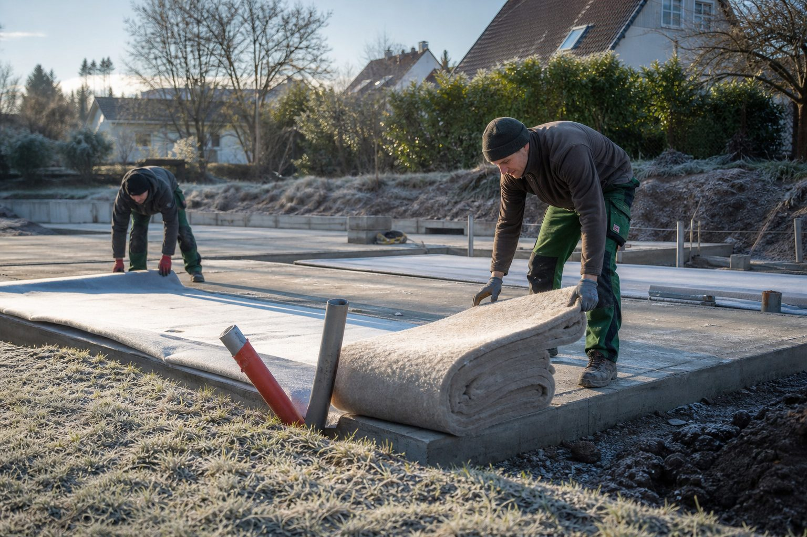

Bauen bei Frost: Was Beton, Mörtel, Pflaster und Pflanzen unter fünf Grad vertragen
Die Saison endet nicht am Kalender, sondern am Thermometer. Welche Arbeiten bei Kälte weiterlaufen können, wo die Normen Grenzen ziehen und warum der Schaden meist erst im Frühjahr sichtbar wird.

- DIN 1045-3: Zwischen +5 und −3 Grad muss der Frischbeton mindestens +5 Grad haben, unter −3 Grad +10 Grad und drei Tage Schutz; nie auf gefrorenen Boden betonieren.
- Mörtel und Kleber enden bei +5 Grad; gefrorene Bettung und gefrorenes Planum lassen sich nicht verdichten – Pflastern bei Frost produziert Setzungen mit Garantieanspruch.
- Pflanzen nur in frostfreiem Boden; seit 1. Dezember steht Saison-Kurzarbeit als Alternative zum Weiterbauen um jeden Preis bereit.
Der Dezember ist im GaLaBau ein Monat der Entscheidungen: Weiterbauen, weil der Auftrag drängt – oder abbrechen, weil das Material nicht mitmacht? Die Antwort hängt vom Gewerk ab. Für die wichtigsten Arbeiten gibt es klare Regeln, für den Rest Erfahrung.
Beton: Die Fünf-Grad-Regel
Beton erhärtet durch eine chemische Reaktion, die bei sinkenden Temperaturen langsamer wird und unter dem Gefrierpunkt stoppt. Friert das Wasser im jungen Beton, sprengt es das Gefüge – die Festigkeit wird nie erreicht. DIN 1045-3 verlangt deshalb: Bei Lufttemperaturen zwischen +5 und −3 Grad muss der Frischbeton beim Einbau mindestens +5 Grad warm sein, bei Zementen mit langsamer Erhärtung mindestens +10 Grad. Unter −3 Grad Lufttemperatur sind +10 Grad Frischbetontemperatur Pflicht, und der Beton muss mindestens drei Tage lang vor Frost geschützt werden.
In der Praxis heißt das: Fundamente für Mauern, Zäune und Palisaden lassen sich bei leichtem Frost setzen, wenn der Beton warm geliefert wird und die Bauteile mit Matten und Folie abgedeckt bleiben. Fertigbeton aus dem Werk ist dabei sicherer als Sackware, die auf der kalten Baustelle angemischt wird. Was nicht geht: Betonieren in gefrorene Schalung oder auf gefrorenen Boden. Der Frost taut unter dem Beton, der Boden setzt sich, das Fundament folgt.
Mörtel und Kleber
Für Fugenmörtel, Drainmörtel und Kleber gelten die Verarbeitungshinweise des Herstellers, und die enden fast immer bei +5 Grad – gemessen an Luft, Untergrund und Material. Wer im Winter Naturstein mit gebundener Fuge verlegt, arbeitet unter Zelt und Heizung oder gar nicht. Ungebundene Bauweisen – Splittbett, Sandfuge – sind weniger empfindlich, aber auch hier gilt: Gefrorene Bettung lässt sich nicht abziehen, und was auf gefrorenen Splitt gelegt wird, liegt nach dem Tauen schief.
Pflaster und Erdarbeiten
Erdarbeiten sind bei Frost möglich, solange der Boden nicht tief gefroren ist; ein Bagger schafft die oberen Zentimeter. Das Problem ist der Einbau: Gefrorene Erde lässt sich nicht verdichten, und gefrorene Schollen im Planum werden nach dem Tauen zu Hohlräumen. Die DIN 18318 setzt für Pflasterdecken eine tragfähige, verdichtete Unterlage voraus – bei gefrorenem Untergrund ist sie nicht herzustellen. Wer bei Frost pflastert, produziert Setzungen mit Garantieanspruch.
Pflanzen
Pflanzarbeiten sind nach DIN 18916 nur in frostfreiem und nicht wassergesättigtem Boden zulässig. Ein Frosttag ist kein Problem, wenn die Pflanzen geschützt lagern; wochenlanger Dauerfrost beendet die Pflanzsaison bis zum Tauwetter. Ballenware, die auf der Baustelle wartet, wird in Erde oder Rindenmulch eingeschlagen und gegen Wind abgedeckt – Wurzeln erfrieren schneller als Kronen.
Die betriebswirtschaftliche Seite
Seit dem 1. Dezember gilt die Schlechtwetterzeit, in der Betriebe des Garten- und Landschaftsbaus bei witterungsbedingtem Arbeitsausfall Saison-Kurzarbeitergeld beantragen können. Das ist die Alternative zum Weiterbauen um jeden Preis. Wer im Dezember Fundamente betoniert, die im April abplatzen, hat zweimal gebaut und einmal bezahlt bekommen. Ein Blick auf die Wettervorhersage für drei Tage entscheidet, ob eine Baustelle läuft – nicht der Liefertermin.
Quellen
- DIN 1045-3: Tragwerke aus Beton, Stahlbeton und Spannbeton – Teil 3: Bauausführung (Betonieren bei kalter Witterung)
- DIN 18318: VOB Teil C – Verkehrswegebauarbeiten – Pflasterdecken und Plattenbeläge, Einfassungen
- DIN 18916: Vegetationstechnik im Landschaftsbau – Pflanzen und Pflanzarbeiten
- Sozialgesetzbuch III, § 101 Saison-Kurzarbeitergeld (Schlechtwetterzeit 1. Dezember bis 31. März) – www.gesetze-im-internet.de/sgb_3/__101.html
Kommentare
Noch keine Kommentare. Schreiben Sie den ersten.

Sachkunde im Pflanzenschutz: Alle drei Jahre Fortbildung – sonst ist Schluss mit Spritzen
Wer Pflanzenschutzmittel anwendet, kauft oder abgibt, braucht den Sachkundenachweis – und muss ihn alle drei Jahre durch eine anerkannte Fortbildung erhalten. Viele Betriebe merken erst bei der Kontrolle, dass die Frist abgelaufen ist.
Anwachsen sichern: Wie junge Bäume den ersten Sommer überstehen
Die Pflanzung ist abgenommen, der Sommer kommt, und der Betrieb haftet für das Anwachsen. Was Fertigstellungs- und Entwicklungspflege verlangen, wie viel Wasser ein Jungbaum wirklich braucht und warum der Gießrand wichtiger ist als der Schlauch.

Schlechtwetterzeit: Wie Saison-Kurzarbeit die Fachkräfte im Betrieb hält
Vom 1. Dezember bis 31. März gilt im Baugewerbe die Schlechtwetterzeit. Rund 42.000 Betriebe nutzen das Saison-Kurzarbeitergeld, um Beschäftigte über den Winter zu halten. Der GaLaBau gehört dazu – und viele Betriebe wissen es nicht.